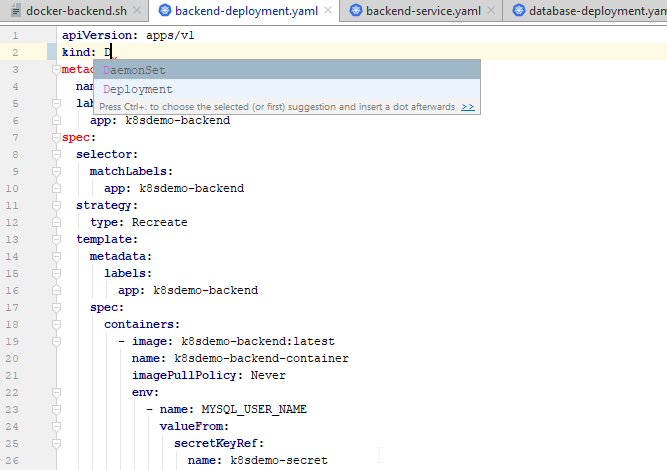
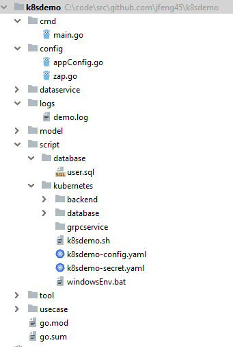
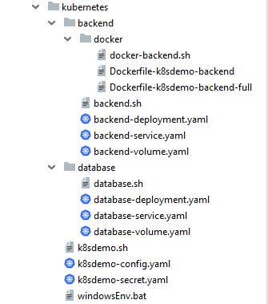
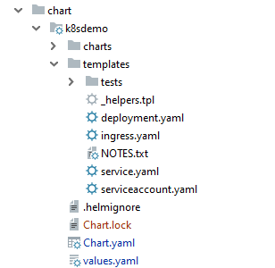
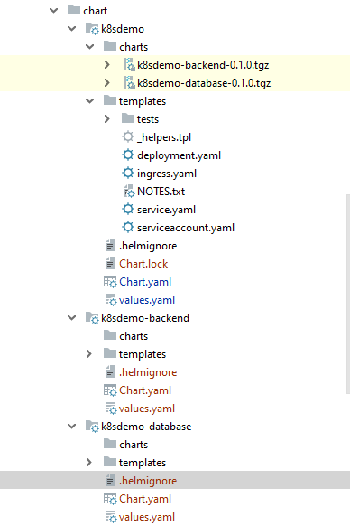

在上一篇“云原生的不同解释及正确含义”里，我们讲到了云原生的引申含义，就是开发环境也是云环境，这样就能保证开发环境和生产环境的一致性，使最终的部署顺利进行。本文就通过具体的例子来探讨云原生的开发环境。
开发流程主要包括编写代码，程序部署和调试几个环节。每一个环节都需要相应的工具来帮助你提高效率。下面我们就来看一下如何搭建开发的云环境以及那些工具能帮你在云环境里提高开发效率。
以前的IDE只支持应用程序的开发，但云原生需要同时进行开发环境（容器）的开发，理想的情况是一个IDE能同时支持两者。我用的是Go语言，选择的IDE是Goland（也就是IDEA IntelliJ），它本身是支持k8s的，你只要下载一个插件就行。它支持k8s的自动完成（Auto-complete）等功能。如下图所示，这样你就拥有了同时支持应用程序和k8s的IDE。

但我不得不说它对k8s的支持很初级，它不能理解k8s对象之间的内在联系。另外，k8s配置文件对格式要求很严，如果空格不对，或格式没有对齐，在部署时会报错。Goland有检查格式的功能，出了问题会报错，但并不是每个错误它都能发现。也就是说当它没有报错时也不能肯定格式就是对的。这已经发生好几次了，IDE没有报错，但部署时有问题。
关于IntelliJ对k8s的支持功能，请参见IntelliJ IDEA 2018.1: Kubernetes support
调式k8s是在Minikube上进行的，而Minikube是安装在Linux虚机上的。这就需要开发环境的宿主机和虚机之间能够共享文件，这样才能方便调试。
我的开发环境是Windows，然后在Windows上装了VirtualBox虚拟机，另外还安装了Vagrant（它是管理虚拟机的一个软件）作为界面来管理VirtualBox。
我的Go应用程序是在Windows上的“C:\code\src\github.com\jfeng45\k8sdemo”目录下，通过Vagrant可以把宿主机的目录挂载到虚机上，这样每次在IDE上修改了k8s的配置文件，在虚机上可以直接取到，不需要另外同步。
在Vagrant中的配置是这样的：
config.vm.synced_folder "C:/code/src/github.com/jfeng45", "/home/vagrant/jfeng45", id: "jfeng45"就是实现宿主机（笔记本）和虚机之间的互相访问，主要是从宿主机访问虚机。我用的是Vagrant， 因此要在Vagran的配置文件（Vagrantfile）里进行配置。网络的配置有不同方式，我配置的是私有网络，这是一种很灵活的方式。它的配置方法是给宿主机和虚机各自设定一个固定的IP地址，这样可以双向互访。
Vagrant的配置命令：
“config.vm.network “private_network”, ip: "192.168.50.4”在配置k8s时，一般会把数据库设置成一个服务。如果能在宿主机上访问k8s数据库，就能提前测试数据库，尽早发现数据库的问题。一旦把虚机和宿主机之间的网络联通了，是可以从宿主机直接访问数据库。
有关环境配置的详情，详情请参阅“通过搭建MySQL掌握k8s（Kubernetes）重要概念（上）：网络与持久卷”.
开发流程通常是这样的。你先在本地的IDE上编写代码（包括应用程序和k8s代码），代码是存储在本地硬盘上的。完成之后，你进入虚机环境，部署k8s集群和应用程序代码，再在k8s集群上运行代码，测试结果。如此反复循环。
我们通过一个例子来讲解流程。在本地编写完代码之后，就要调试k8s程序。先用Vagrant启动虚机，然后启动Minikube：
sudo minikube start
上面是程序的目录结构。“cmd”目录里是主程序，“config”目录是负责程序配置的，“dataservice”是数据访问层，“model”是域模型层，“logs”目录是存储日志的。“script”包含了所有与程序部署相关的文件。其中“database”里面是数据库脚本，“kubernetes”是k8s的所有配置文件，一回儿还会详细讲解。

上面就是k8s的配置文件目录结构，最外面有两个文件“k8sdemo-config.yaml”和"k8sdemo-secret.yaml"是共享文件，因此放在最外层。里面主要有两个子目录“backend”和“database”分别存后端程序和数据库的配置文件。内部的结构是类似的，都有三个“yaml”文件，“backend-deployment.yaml”是部署配置文件, "backend-service.yaml"是服务配置文件, "backend-volume.yaml"是持久卷配置文件. ".sh"是k8s命令，用来创建k8s对象。“backend”目录还多了一个“docker”子目录用来存储backend应用的Docker镜像，database的镜像文件是直接从Docker的库中取得，因此不需要另外生成镜像文件。
关于k8s的核心概念，请参阅“通过实例快速掌握k8s（Kubernetes）核心概念”.
我们的程序有两个服务“k8sdemo-database-service”和“k8sdemo-backend-service”，先要部署“k8sdemo-database-service”，因为它不依赖于其它服务。不过还有些对象是共享的需要先进行调试。有一点需要注意的是由于k8s对象之间是有依赖关系的，在你创建时是需要按照顺序来创建。顺序的部署次序是这样的Secret->ConfigMap->Volume->Deployment->Service。
部署共享对象：
cd /home/vagrant/jfeng45/k8sdemo/script/kubernetes
kubectl apply -f k8sdemo-config.yaml
kubectl apply -f k8sdemo-secret.yaml检查创建情况：
kubectl describe configMap
kubectl describe secret部署数据库服务：
cd /home/vagrant/jfeng45/k8sdemo/script/kubernetes/database
kubectl apply -f database-volume.yaml
kubectl apply -f database-deployment.yaml
kubectl apply -f database-service.yaml
数据库创建好了之后，可以在IDE中用程序直接访问虚拟机上的库，这样比较方便。但你需要设置环境变量。在k8s中是由configMap设置的，在Windows里需要单独设置，命令在“windowsEnv.bat”里面。内容如下：
setx MYSQL_ROOT_PASSWORD root
setx MYSQL_USER_NAME dbuser
setx MYSQL_USER_PASSWORD dbuser
setx MYSQL_DATABASE service_config
setx MYSQL_HOST 192.168.50.4
setx MYSQL_PORT 30306创建应用程序镜像：
cd /home/vagrant/jfeng45/k8sdemo/
docker build -f ./script/kubernetes/backend/docker/Dockerfile-k8sdemo-backend -t k8sdemo-backend .部署后端服务
cd /home/vagrant/jfeng45/k8sdemo/script/kubernetes/backend
kubectl apply -f backend-volume.yaml
kubectl apply -f backend-deployment.yaml
kubectl apply -f backend-service.yaml登录容器，并运行程序，查看结果：
vagrant@ubuntu-xenial:~/jfeng45/k8sdemo/script/kubernetes/backend$ kubectl exec -ti k8sdemo-backend-deployment-57bcd56f7d-26p5k -- /bin/sh
~ # ./main.exe
time="2019-12-10T06:23:45Z" level=debug msg="connect to database "
time="2019-12-10T06:23:45Z" level=debug msg="dataSourceName:dbuser:dbuser@tcp(k8sdemo-database-service:3306)/service_config?charset=utf8"
time="2019-12-10T06:23:45Z" level=debug msg="FindAll()"
time="2019-12-10T06:23:45Z" level=debug msg="created=2019-10-21"
time="2019-12-10T06:23:45Z" level=debug msg="find user:{1 Tony IT 2019-10-21}"
time="2019-12-10T06:23:45Z" level=debug msg="find user list:[{1 Tony IT 2019-10-21}]"
time="2019-12-10T06:23:45Z" level=debug msg="user lst:[{1 Tony IT 2019-10-21}]"上面步骤中的k8s部分并不是每次修改应用程序之后都要运行，通常只需要运行有改动的部分。一般来讲只是部署（Deployment）会有改动，因为程序的Docker镜像变了。即使这样要完成一次调试也有不少步骤。
有关k8s的核心概念，详情请参阅“通过实例快速掌握k8s（Kubernetes）核心概念”.
从上面的流程可以看出，在本地云环境上进行开发和调试还是比较繁琐的，你需要在宿主机和虚拟机之间进行切换，还要同时对应用程序和k8s进行调试，中间有很多手工操作，要敲入很多命令，怎样才能简化它呢？
k8s的一个痛点就是它有很多组成部分（部署，服务，存储卷等），每个部分都要分别敲入命令进行调试，特别是当出现问题时，你需要反复删除原来的并创建新的。Helm解决了它的这个痛点。Helm是最流行的k8s包管理工具，就像Java中的Maven和Go里面的“Go Module”。它的一个核心概念是“Chart”。有了它之后，你可以把k8s的各个部分作为一个整体来管理，这样就大大减少了工作量。在调试初期，你还是可以对各部分进行单独调试，这样减少复杂度。但一旦成功之后，你就可以把它当成一个整体来操作，这样大大简化了操作。Helm的另一个作用就是对K8s配置的版本进行管理。
chart里一个很重要的概念就是模板（template）,也就是Go语言模板。模板就是里面加入了编程逻辑的k8s文件。这些模板文件在使用时都要先进行模板解析，把其中的程序逻辑转化成对应的编码，最终生成k8s配置文件。

以上就是Helm自动生成的chart目录结构，在Helm里每个项目叫一个chart，它由下面几个组成部分：
现在我们就用一个例子来展示Helm的chart设计。这个例子是一个微服务应用程序，它共有三层: 前端，后端和数据库。
在k8s中，每一层就是一个单独的服务，它里面有各种配置文件。Helm的优势是把这些不同的服务组成一个Chart来共同管理和调式，方便了许多。
键入如下命令创建chart，其中“k8sdemo”是chart的名字，这个名字很重要，服务的名字和label都是由它产生的。
helm create k8sdemo这之后，系统会自动创建前面讲到的chart目录结构。然后就是对已经生成的文件进行修改。

上面就是最终的chart目录结构图。“chart”是总目录，里面有三个子目录“k8sdemo”，“k8sdemo-backend”，“k8sdemo-database”, 每一个对应一个服务，每个服务都是一个独立的chart，能单独调式部署，chart之间也可以有依赖关系。其中“k8sdemo”是父chart，同时也是前端服务，它的“charts”目录里有它依赖的另外两个服务。“k8sdemo-backend”是后端服务，“k8sdemo-database”是数据库服务。
安装k8sdemo：
vagrant@ubuntu-xenial:~/jfeng45/k8sdemo/script/kubernetes/chart$ helm upgrade k8sdemo ./k8sdemo
Release "k8sdemo" has been upgraded. Happy Helming!
NAME: k8sdemo
LAST DEPLOYED: Fri Nov 29 01:28:55 2019
NAMESPACE: default
STATUS: deployed
REVISION: 2
NOTES:
1. Get the application URL by running these commands:
export NODE_PORT=$(kubectl get --namespace default -o jsonpath="{.spec.ports[0].nodePort}" services k8sdemo)
export NODE_IP=$(kubectl get nodes --namespace default -o jsonpath="{.items[0].status.addresses[0].address}")
echo http://$NODE_IP:$NODE_PORT获取Pod名称：
vagrant@ubuntu-xenial:~/jfeng45/k8sdemo/script/kubernetes/chart$ kubectl get pod
NAME READY STATUS RESTARTS AGE
k8sdemo-74cb7b997c-pgcj4 1/1 Running 0 33s
k8sdemo-backend-5cd9d79856-dqlmz 1/1 Running 0 33s
k8sdemo-database-85855485c6-jtksb 1/1 Running 0 33s
k8sdemo-jenkins-deployment-675dd574cb-r57sb 1/1 Running 3 23d运行程序进行测试：
vagrant@ubuntu-xenial:~/jfeng45/k8sdemo/script/kubernetes/chart$ kubectl exec -ti k8sdemo-backend-5cd9d79856-dqlmz -- /bin/sh
~ # ./main.exe
time="2019-11-27T07:03:03Z" level=debug msg="connect to database "
time="2019-11-27T07:03:03Z" level=debug msg="dataSourceName:dbuser:dbuser@tcp(k8sdemo-database-service:3306)/service_config?charset=utf8"
time="2019-11-27T07:03:03Z" level=debug msg="FindAll()"
time="2019-11-27T07:03:03Z" level=debug msg="created=2019-10-21"
time="2019-11-27T07:03:03Z" level=debug msg="find user:{1 Tony IT 2019-10-21}"
time="2019-11-27T07:03:03Z" level=debug msg="find user list:[{1 Tony IT 2019-10-21}]"
time="2019-11-27T07:03:03Z" level=debug msg="user lst:[{1 Tony IT 2019-10-21}]"
~ #由上面可以看出，使用了Helm之后，大大简化了k8s的部署和调试过程。只需一步就能完成所有k8s对象的部署。
详情请参见用Helm3构建多层微服务
Helm解决了k8s的部署问题，但你修改程序之后，还是要更新Docker镜像，才能部署，部署之后还要测试，比对结果，这里面还是有很多手工操作，有没有工具能自动完成这些工作？确实有这样的工具，而且还有不少，它们的功能也不尽相同。这里面有一类工具是相对来说比较有用的，那就是自动化整个部署、调试流程的。它们的功能和流程一般是这样的。
它会自动检测程序修改，一旦发现就自动生成Docker镜像，然后调用k8s部署文件把新的镜像文件部署到k8s集群上，再调用测试程序进行测试，并在控制台显示结果。整个过程不需要你敲入一行命令，全部自动执行。这样完全消除了手工操作，使整个流程自动执行。你可能会说你并不想每修改一行程序就进行一下测试，而是当你需要的时候再去测试。这个功能在某些工具里也是可以配置的，你可以配置一个触发器，只有当它触发之后才自动完成上述操作。
我们现在就用一个例子来具体说明，使用的工具是Skaffold。Skaffold的主要部分是一个配置文件，叫“skaffold.yaml”, 存放在项目的根目录。里面有Skaffold需要的信息，如Docker镜像的文件名，k8s的部署文件等。
apiVersion: skaffold/v1
kind: Config
metadata:
name: k-sdemo
build:
artifacts:
- image: k8sdemo-backend
context: .
docker:
dockerfile: script/kubernetes/backend/docker/Dockerfile-k8sdemo-backend
deploy:
kubectl:
manifests:
- script/kubernetes/backend/backend-deployment.yaml
- script/kubernetes/backend/backend-service.yaml
上面就是这个文件，它看起来很像k8s的配置文件，它的类型是“Config”。里面有两个主要部分，一个是：“build”，负责生成项目的Docker镜像的，另一个是“deploy”，负责把生成的镜像部署到k8s上。
Skaffold可以帮你自动生成基础配置文件。你可以敲入“skaffold init”，它会问你一些问题，并根据你的回答，自动生成“skaffold.yaml”文件。生成之后，你可以根据需要进行修改。这里面比较重要的就是引用了镜像文件和k8s部署文件。如果你以前已经创建了这些文件，那么你可以复用它们。
生成“skaffold.yaml”文件之后，键入如下命令“skaffold dev”，系统会运行“skaffold.yaml”，部署k8s，并开始监控程序的修改。输出如下：
vagrant@ubuntu-xenial:~/jfeng45/k8sdemo$ skaffold dev
WARN[0000] Could not get minikube docker env, falling back to local docker daemon: getting minikube env: Running [minikube docker-env --shell none]: stdout , stderr: *
Listing files to watch...
- k8sdemo-backend
Generating tags...
- k8sdemo-backend -> k8sdemo-backend:05894ca-dirty
Checking cache...
- k8sdemo-backend: Not found. Building
Found [minikube] context, using local docker daemon.
Building [k8sdemo-backend]...
Sending build context to Docker daemon 534.5kB
Step 1/13 : FROM golang:latest as builder
---> dc7582e06f8e
Step 2/13 : WORKDIR /app
---> Using cache
---> d5d126eaa528
Step 3/13 : COPY go.mod go.sum ./
---> Using cache
---> 6ed430911953
Step 4/13 : RUN go mod download
---> Using cache
---> bfb89c8b352b
Step 5/13 : COPY . .
---> 6c1f89974762
Step 6/13 : WORKDIR /app/cmd
---> Running in d36e8a412aae
---> 9f7f92349811
Step 7/13 : RUN go build -o main.exe
---> Running in 31ff6408dfda
---> 31d84d0c860a
Step 8/13 : FROM alpine:latest
---> 965ea09ff2eb
Step 9/13 : RUN apk --no-cache add ca-certificates
---> Using cache
---> a27265887a1e
Step 10/13 : WORKDIR /root/
---> Using cache
---> b9c048c97f07
Step 11/13 : RUN mkdir /lib64 && ln -s /lib/libc.musl-x86_64.so.1 /lib64/ld-linux-x86-64.so.2
---> Using cache
---> 95a2b77e3e0a
Step 12/13 : COPY --from=builder /app/cmd/main.exe .
---> Using cache
---> 5ef8db6e073a
Step 13/13 : CMD exec /bin/sh -c "trap : TERM INT; (while true; do sleep 1000; done) & wait"
---> Using cache
---> 6f3e1f751ac6
Successfully built 6f3e1f751ac6
Successfully tagged k8sdemo-backend:05894ca-dirty
Tags used in deployment:
- k8sdemo-backend -> k8sdemo-backend:6f3e1f751ac6ad3c39092a9308f9a6e1d5e087da275349aa3719344785b26f1a
local images can't be referenced by digest. They are tagged and referenced by a unique ID instead
Starting deploy...
- deployment.apps/k8sdemo-backend-deployment created
- service/k8sdemo-backend-service created
Watching for changes...你如果有测试程序，就可以在控制台输出结果。我没有测试程序，就要登录到Pod上运行程序，查看结果。
获得Pod名
vagrant@ubuntu-xenial:~/jfeng45/k8sdemo/script/kubernetes/backend$ kubectl get pod
NAME READY STATUS RESTARTS AGE
k8sdemo-74cb7b997c-8hpdq 1/1 Running 1 11d
k8sdemo-backend-5cd9d79856-nwlcl 1/1 Running 1 11d
k8sdemo-backend-deployment-57bcd56f7d-26p5k 1/1 Running 0 14s
k8sdemo-database-85855485c6-vnsp4 1/1 Running 1 11d
k8sdemo-jenkins-deployment-675dd574cb-r57sb 1/1 Running 5 36d登录Pod，并运行程序
vagrant@ubuntu-xenial:~/jfeng45/k8sdemo/script/kubernetes/backend$ kubectl exec -ti k8sdemo-backend-deployment-57bcd56f7d-26p5k -- /bin/sh
~ # ./main.exe
time="2019-12-10T06:23:45Z" level=debug msg="connect to database "
time="2019-12-10T06:23:45Z" level=debug msg="dataSourceName:dbuser:dbuser@tcp(k8sdemo-database-service:3306)/service_config?charset=utf8"
time="2019-12-10T06:23:45Z" level=debug msg="FindAll()"
time="2019-12-10T06:23:45Z" level=debug msg="created=2019-10-21"
time="2019-12-10T06:23:45Z" level=debug msg="find user:{1 Tony IT 2019-10-21}"
time="2019-12-10T06:23:45Z" level=debug msg="find user list:[{1 Tony IT 2019-10-21}]"
time="2019-12-10T06:23:45Z" level=debug msg="user lst skaffold:[{1 Tony IT 2019-10-21}]"有关Skaffold的详情，请参见Working With Skaffold
有四个比较流行的 自动调试工具，它们是“Draft”，“Skaffold”，“Garden”，“Tilt”。
Garden：
我最先测试的是“Garden”，因为它功能强大。但测试之后发现它很不灵活，对项目的目录结构有特殊要求。例如，你的项目有三个微服务，那么它会建一个总项目，三个微服务每个是一个子项目，每个子项目里需要一个“Garden”的微服务配置文件，总项目也要一个配置文件，而且文件的名字和位置是固定的。这导致它配置起来很繁琐，而且与一般的程序结构有冲突。“Garden”的设计思想是好的，它想使用一个工具来统一开发和部署。但由于开发和部署差别还是很大的，统一的结果就是不伦不类。它给出的例子也都是很简单的实例，我觉得一旦应用到比较复杂的项目就会很不方便。
Garden的详情，请参见Introduction
Tilt：
“Tilt”是我第二个测试的，它看起来非常灵活，功能也很强大。但运行之后，它在连接Minikube时出了问题，连接不上。官方安装文档给出的默认的k8s集群是Microk8s。它的文档里也说了支持Minikube，但并没有解释需要做哪些设置，看起来像是不需要设置就可以直接连通，不知道为什么我的Minikube会有问题。当然，也有可能是因为我启动时用的是“minikube start --vm-driver=none”，导致了连接的问题。我想如果花些时间仔细研究，问题应该可以解决，但连接Minikube是整个过程的第一步，一上来就出问题实在让我有些信心不足，就决定先放一放。
Tilt的详情，请参见Tutorial: The First 15 Minutes
Skaffold：
这是我测试的第三个工具。它功能很强大，也很灵活，虽然也碰到一些问题，但很快就解决了。因此我对Skaffold是很满意的。Skaffold给出的官方安装文档的下载地址是“https://storage.googleapis.com/skaffold/releases/latest/skaffold-linux-amd64”。 这个没法访问。你可以在GitHub的release里面下载可执行文件，然后拷贝到“/usr/local/bin/skaffold”目录就可以了。
Draft：
我没有测试Draft。Draft现在已经不再维护了，它的开发者有别的任务，停止了继续开发。Draft应该比较容易使用，但功能不够强大。
总体评论：
总的来说我对Skaffold很满意，它确实大大简化了调试流程。但我觉得这类工具并不像我想像的那么完美。因为每次修改程序之后都要重新生成镜像，这个过程很慢。当然你可以有很多手段来优化他，例如建一个本地镜像库。另外这类工具本身也有优化措施，例如对下载库的优化。但总的来说跟本地环境还是没法比。
关于这些工具的比较详情，请参见The ultimate guide for local development on Kubernetes: Draft vs Skaffold vs Garden.io和Local Kubernetes development with Tilt.dev
在云原生开发模式下，你可以把项目的运行环境分成两部分。一部分是项目需要调用的服务和资源，这些都是部署在云环境上的（也就是k8s集群）。你可以用Helm创建一个chart，里面包含所有本项目需要调用的k8s服务（包括数据库服务），然后把这个chart部署到k8s集群上，这部分的程序变化频率较低。一旦这些服务中的某些代码变了，你只要重新部署chart就行了。
另一部分是项目本身的代码和运行环境，这部分程序变化频率较高。这一部分既可以在k8s上运行，也可以在本地环境运行。它的不同决定了开发模式的不同。
在这种模式下，除了IDE和代码是在本地，其他的所有东西都是在云环境。当项目代码修改之后，需要创建新的Docker镜像文件，然后把镜像部署到k8s集群上，在k8s集群上进行调试。你可以用前面讲到的自动调试工具来完成这一任务。它的好处是开发环境和生产环境完全兼容，这样保证了在生产环境部署时没有意外。缺点是调试效率稍低。你如果想把IDE和代码都放在云上，也是可以的，本地只要有一个客户端来访问它们就行了。 这时就是纯正的云开发环境，但它的象征意义更大，对实际工作没有太大影响。
在这种模式下，项目是在本地调试的，而它依赖的其它微服务是部署在云环境上（虚拟机上的k8s上）的。由于本地环境和虚机的网络是联通的，本地环境上运行的代码可以访问虚机上的微服务。数据库也是一样，也是部署在k8s集群上，你可以把它看成一个服务，并通过本地客户端访问数据库上的数据，这时数据库的物理位置对你是透明的，不管是在云上还是在本地都没有区别。当项目的代码修改之后，你在本地运行项目并调试。如果你需要web服务器，对有些语言不成问题，例如Go，它的web服务器就是用本地代码生成的，是程序的一部分。如果你用的是Java，需要单独的服务器，那么你还需要一个本地服务器来部署修改之后的代码。
这种方式的最大好处就是调试效率很高。因为本项目的代码修改频率是最高的，用这种方式能最大限度地提高它的调试速度。虽然牺牲了一点开发环境和生产环境的兼容性，但这也是可以弥补的。例如，你可以每隔一段时间把本地项目部署到k8s集群上（使用上面提到的调试工具）和其他依赖的服务一起进行整个联调，这时的运行环境就和生产环境一致了。具体的部署频率根据个人和项目来定，可以是每天，也可以是3天或更多。这样既能保证平时调试的速度和效率，又能保证本地开发环境和生产环境的一致性。这种模式在我看来更有优势。
本文详细讲解了云原生开发环境以及需要的工具，它包括下面四类：
完整源码的github链接：
k8sdemo